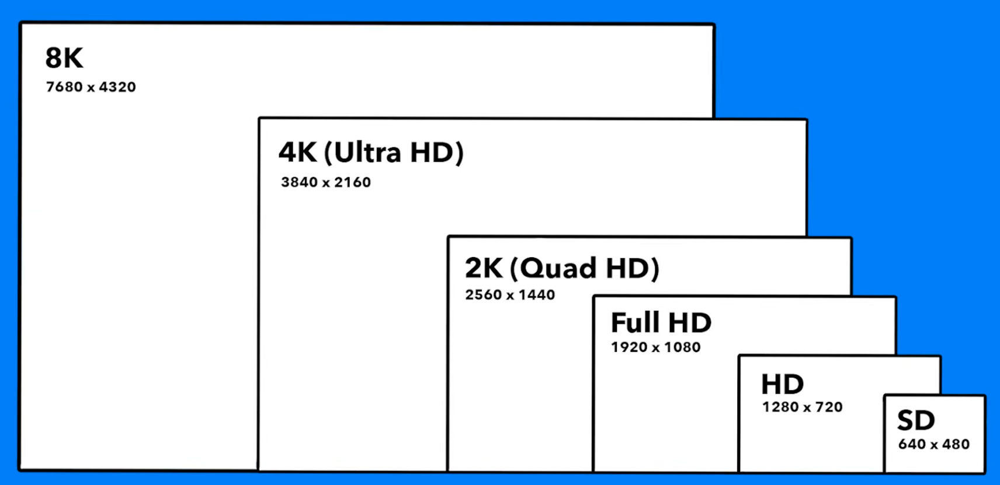

A compact reference for common screen and render targets, with implications for graphics, XR, video, screenshots, UI review, and generated artifacts.

| Label | Dimensions | Notes |
|---|---|---|
| 8K | 7680 x 4320 | High-end video and large displays |
| 4K / Ultra HD | 3840 x 2160 | Common high-resolution monitor target |
| 2K / QHD | 2560 x 1440 | Common productivity and gaming monitor target |
| HD | 1280 x 720 | Lightweight preview target |
| SD | 640 x 480 | Legacy or low-bandwidth target |
Pixel count grows quickly. 4K has four times as many pixels as 1080p, and 8K has four times as many pixels as 4K.